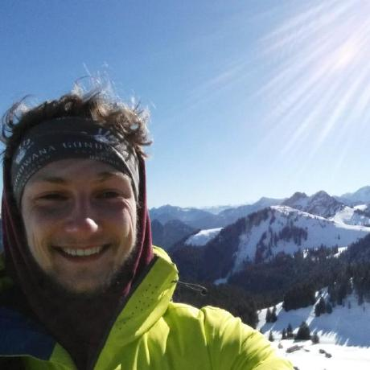
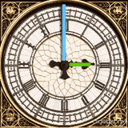
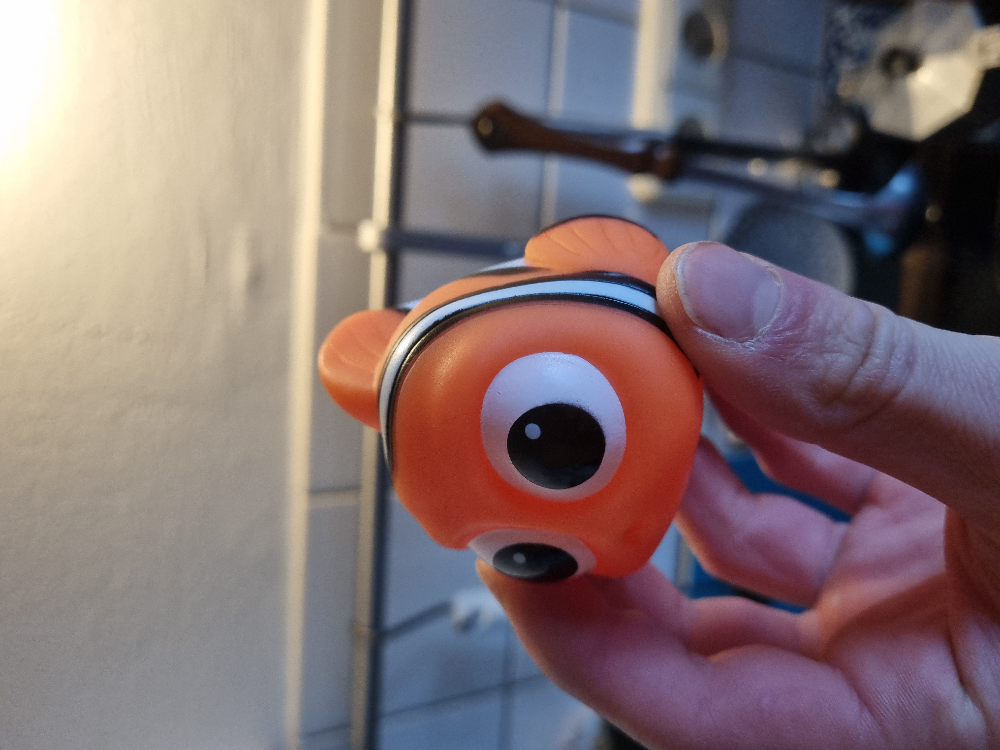

Sebastian JungI'm a researcher and PhD student at the German Aerospace Center (DLR) in Munich under the supervision of Rudolph Triebel. I am interested in object-centric computer vision, geometry understanding, few-shot understanding and everything in between. My focus is on object centric perception, motivated by its usability in robotics and augmented reality. |
 |
{kind=link}
News
|
Publications |
|
|
 |
TAPNext++: What's Next for Tracking Any Point?
Sebastian Jung, Artem Zholus, Martin Sundermeyer, Carl Doersch, Ross Goroshin, David Joseph Tan, Sarath Chandar, Rudolph Triebel, Federico Tombari CVPR Findings, 2026 Project Page / arXiv / Code State-of-the-art point tracking model for long video sequences. Enables re-detection after occlusion via roll augmentation and distributed sequence-parallel training on 1024-frame videos, achieving up to 562 FPS throughput. |

 |
Finding NeMO: A Geometry-Aware Representation of
Template Views for Few-Shot Perception
Sebastian Jung, Leonard Klüpfel, Rudolph Triebel, Maximilian Durner 3DV, 2026 (oral) Project Page / arXiv / Code An encoder-decoder architecture to generate a geometric, object centric representation. The decoder allows object detection, segmentation and pose estimation on any object without fine-tuning. |
|
Website based on Jon Barron's template. Also, consider using Leonid Keselman's Jekyll fork. |